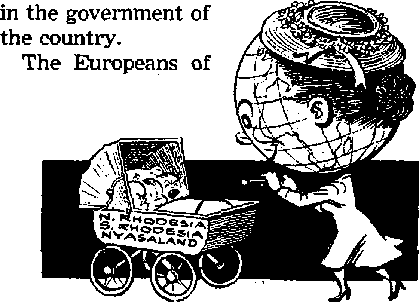

MAMMALS
PRAISE FOR A CHRISTIAN ASSEMBLY Newswriters marvel at program, size, organization, behavior, unity and brotherhood
Governir mt morals affect the children
Eyewitness reports of destruction
Glorious arrangement is at hand
THE MISSION OF THIS JOURNAL
News sources that are able to keep you awake to the vital issues of pur times must be unfettered by censorship and selfish interests. “Awake/77 has no fetters. It recognizes facts, faces facts, Is free to publish facts* It is not bound by political ambitions or obligations; it is unhampered by advertisers whose toes must not be trodden on; it is unprejudiced by traditional creeds. This journal keeps itself free that it may speak freely to you- But it does not abuse its freedom. It maintains integrity to truth.
“Awake!” uses the regular news channels, but is not dependent on them. Its own correspondents are on all continents, in scores of nations. From the four corners of the earth their uncensored, on' the 'scenes reports come to you through these columns. This journal’^ viewpoint is not narrow, but is international. It is read in many nations, in many languages, by persons of all ages. Through its pages many fields of knowledge pass in review—government, commerce, religion, history, geography, science, social conditions, natural wonders—why, its coverage is as broad as the earth and as high as the heavens.
“Awake I” pledges itself to righteous principles, to exposing hidden foes and subtle dangers, to championing freedom for all, to comforting mourners and strengthening those disheartened by the failures of a delinquent world, reflecting sure hope for the estab/ishmenf of a right' eous New World.
Get acquainted with “ Awake !** Keep awake by reading “Awake!”
Published Sjcjumonthly Fir WATCHTOWER BIBLE AND TRACT SOCIETY, INC.
117 Adairs Street Brooklyn 1, N, Y., U. S. A,
N. IL Knohr, President Grant Suiter, Secretary
Printing this issue; 1,150^000
Five cents a copy
Linguip* in which this itiagulne it published: Siinlnioiithli'—Afriknitis, Enultsli, Finnish, French. German, Hollandlsh, Norwegian, Spanish, Sw^lirii. Mnnthly— -Danish, <ireek, Fortusuesc, Ukrainian.
OftlceS Yearly subscription
America, U.S., 117 Adams St., Brcmklyn 1, N.Y, JI
A i lira I |a, 11 Btrth'ford Rd., Blrnlhfleld, .NWS.W, H.q Canada, 40 Irwin Ave., Torontn !», Untarjn $1 England, 34 Craven Ttrrace, Lojplnn, W. 2 7s Soith Airi tn, Private Rna, p.o, Elnniisfotitelti,
Transvaal 7s
Kittened an sefiomi-Naas inattrr a i ,V Y
H emittances should be sent te office in your country in ffliiiplinncs with regilmtens to fcwtrantee safe delivery of money. Remittances arc accepted at Urnnlsljii from countries where no office is located, by interiiAtinuai nUiney order only. KphscriptfaH rates in different. corm tri re are here stated in itmai currency. Notice of expiratlen t with renewal blank I 1* sent at least two Issues hefnre subscrlptloii rx-[tiros. Change of a*drees when sent |j pur offlr-r may be expected effective within one month- Send your old a a well as new address.
.irt of WrVi 3, Prints In U, $. a.
CONTENTS
Praise for a Christian Assembly
London’s Statues with a Weird History 16
The Island of Cyprus Quakes Eyewitness Report
A Neighbor's View of Trailer City
'Your Word Is Truth”
A Perfect New World for Mankind
Jehovah’s Witnesses Preach
in All the Earth—Bahamas
Do You Know?
Watching the World
Brooklyn, M. ¥., Dacombtr 6,
Number ts
THERE was a time In the United States when the per capita consumption of reading matter was only six pounds. But that was the year 1890. Quickly, after 1914, the figure zoomed like a snaring skyrocket so that today every man, woman and child In the United Slates consumes, yearly, more than 300 pounds of paper. That is a blinding blizzard of paper, with every “flake1’ vying for your attention. Growing denser every day, the blizzard threatens to. weary one's eyes, consume one’s time and to suffocate one mentally. The blizzard’s “snow" is of two types: the expendable and the unexpendable. You meet up with both.
During the week the daily newspapers stream in, and when Sunday comes the blizzard redoubles its force: A jumbo two-to thrcc-pound newspaper weights down your lap. For ten to fifteen cents th*re is enough paper to keep your eyes busy and mind occupied for several days, if it is read like a textbook.
Today no one is immune from the paper blizzard. There arc magazines for people of all occupations, special eye-catching magazines for the male, ladies’ magazines for the housewife, romantic magazines for the lovelorn, sports magazines for the athletic-minded and paper-bound books for everyone.
Surprisingly, comic books create a blizzard of their own; it lias been estimated that these magazines circulate throughout the United States at the rate of about 100,000,000 monthly. Thus the paper blizzard is instrumental in robbing children of time that could have been devoted to productive studies.
In this raging storm many “flakes” of printed matter that are retained drift their way into the bulging closets or onto the already overflowing bookshelves. For, Indeed, this is the age of books on easy terms, the era when book clubs will bend “free” volumes if the reader enrolls in one of the many clubs that offer the gamut of books from “detective” novels to biographies of the world's great men. Some persons, falling victim to the blizzard, try to keep up with the best-selling novels. A wild-goose chase this is. As soon as today’s best seller is purchased, tomorrow’s Is at the bookstore.
In the book The Scholar and the Future of the Research Library, Mr. Fremont Rider predicted that if the Yale University Library increases at Its normal rale, it will need, in the year 2040, six thousand miles of bookshelves, six thousand employees occupied solely in cataloguing new books, eight acres of floor space and 750,000 catalogue drawers. Thoughtfully, Mr. Rider comments: “We seem to be fast Cuming to the day when, unless it is afforded the most expert sort of bibliographical service possible, civilization may die of suffocation, choked in its own plethora of print"
How can one seek shelter from this blizzard? One way is to apply the law of relative importance. Read what you ought to read, that which Is important to you, and discard everything else. Be selective when reading newspapers, magazines and books. But the best way to seek shelter is to turn to the one book that forewarned us of this paper blizzard* the Bible. Said wise King Solomon: “Take warning; of the making of many books there is no end, and much study [of them] is weariness of the flesh.”—Ecclesiastes 12:12, An Amer. Trans.
If the inspired writer commented on the making of books in his day, long before the invention of printing, then how much more must we heed the warning today when high-speed presses grind out the paper blizzard. But the Preacher exempted certain material from his warning: “The words of the wise are like goads; and collections which are given by one teacher are like nails driven with a sledge. ” (Eeclesias~ tes 12:11, An Amer. Trans.) So study God’s Book, the Bible, whose wise words are dependable, “like nails driven with a sledge.” The study of his Word, by itself or with the aid of books helping to understand his Word, is not wearisome, but is refreshing, invigorating.
There is a reason for this Minding blizzard of paper: It is another of Satan’s devices to blind men from1 the truth of God’s new world by keeping their minds occupied with mundane things. (2 Corinthians 4:4) Read selectively, then, that you may survive not only the paper blizzard but also the storm of Armageddon and enter into a clean new world.
There was no lackofenthu-siastic praise for ' the New World Society Assembly of Jehovah’s Witnesses, held in Yankee Stadium, New York, July 19 through 26. The witnesses in attendance praised the program, the benefit they received from it and the arrangements that had been made for their welfare. Strangers praised the behavior of the witnesses and the unity and Christian spirit.
What of the program? From Germany one conventioner wrote: We “are all full of rejoicing and thankfulness to Jehovah for the wonderful days in New York and the privilege of having been participants in the blessed World Assembly. It was
FOR A CHRISTIAN ASSEMBLY
“Let another man praise thee, and not thine own month; a stranger, and not thine own Ups/' —Proverbs 27: 2,
truly a source of strength of the very highest degree for all of us, and surely the human words which we might now utter could not begin to express the true meaning of this powerful assembly, both for God's people and for the history of the work in this time of the end/7 From California: “I thought over what a lot of love and effort had gone into the whole thing, and I felt moved to let you all know it.” From Oslo, Norway: “My heart was widened, my sight also. I will never forget it! I knew that my heavenly Father, Jehovah, would bless me before 1 went from Oslo, but this is more than I dreamt about.’1 To “look at all the different people, brothers, sisters and their children, that are pictured in our books,” this writer con-
tinned, “I thought rather they were imagined pictures that belonged to the future, • . . These Jehovah’s servants, humble, unselfish, true, brave, steadfast valiant warriors that go before and will not retreat before the enemy . . . these missionaries and pioneers that work in countries far away : ■ ■ the progress Jehovah has given them . . . the blessings have come to us in different ways. I wept with joy."
Many thousands from New York city who are not Jehovah’s witnesses heeded the warm invitation and attended the assembly. One wrote: ‘‘Can anybody become a Jehovah’s witness? Could I?” Another said that though a ‘Protestant for his whole life’ he had never heard his preacher lay such stress on the need for true and real godliness. ’
The assembly meant much to those who attended, and those in attendance made an excellent impression on the city. A hotel manager wrote that his hotel “recently enjoyed the distinct pleasure of playing host to a goodly number of Jehovah's Witnesses ... the finest group of guests that this hotel has ever had.” An official of another wrote: “It is with considerable regret that we approach the closing of the great Watchtower Convention of Jehovah’s Witnesses. The presence of these kind and gentle people, 200,000 men, women and children, in tjw* City Nwn Yvn1?., is regarded by many of our citizens as an occasion that will leave a marked, but beneficent, effect on our city.”
The Press Comments
Some of its Canadian readers, the Toronto Daily Star knew, had been given no such impression of Jehovah’s witnesses, so that paper said in its July 20 issue: “Don’t go looking for cigarette butts under the seats at Yankee Stadium this week. Don’t YrVren fsw the c¥mk, cAvtrik ul empty beer cans as they rattle down the steep incline of the aisles, . . . The gang from Ebbets Field would hoot if they took the trouble to look in on Yankee headquarters during this torrid third week of July. On the pitcher’s mound they’d find a formal garden. In the triangle between first and third they’d find flowers in bloom and a closely clipped green hedge. Somewhere between first and second they’d find a rustic bridge, and a little fountain Splashing real water. And over second base they’d find a bright yellow canopy erected to keep the sun off the speakers. Speakers in Yankee Stadium, yes. But even Casey Stengel would admire the attendance figures clicked up on the turnstile counters. More than 82,000 perspiring souls churned through by the middle of the hottest Sunday afternoon of the summer. And an overflow mob of 40,000 more congregated in tents outside—and across the river and into another state. No sporting, event, this,, but a religious gathering. And old-time religion at that.”
Then came the explanation of who was involved: “Quite probably to most Canadians, Jehovah Witnesses are somewhat strange people who stand about on street comers proffering strange publications and who are perpetually running afoul of Duplessis gendarmes in Quebec, Person for person, they are undoubtedly no stranger than any cross section of the Yraman race anyw'nere. Tne men wear tropical suits, wrinkled because of the heat, and jazzy sports shirts. The women wear bright summer dresses. Each of them.—and there are almost half a million throughout the world—is considered a preacher, devoting at least part of his time to spreading the doctrine of his sect. . .- . They are probably the politest, most even-tempered crowd ever to elbow into Yankee Stadium.’’
A Awy or two easier newspapers ’in as widely separated places as Los Angeles,
Cleveland, Pensacola, Florida, and Owatonna, Minnesota, had carried an Associated Press report that said: “Some of the most zealous, hard-working preachers of the Gospel today have no pulpits, no congregations and get no pay. This week end, thousands of them are swarming into New York City from all over the world for what they predict will be the biggest religious gathering in history. They’re called Jehovah’s Witnesses, and each baptized member, man or woman, young or old, is a minister in name as well as in deed. Although most of them earn their livelihoods by worldly jobs, they devote the rest of their time to spiritual business —visiting homes, preaching on street corners, passing out literature.”
Further Description
In New York the German paper Aufbau said, July 17: "You have certainly seen in the streets of New York or of some other city young, nicely dressed men and women standing in places with much traffic, offering the passers-by, in an unobtrusive, kind and modest way the magazines The Watchtower and Awake! They belong to the religious movement * Jehovah’s Witnesses’ which today encircles the whole world. That this is not an exaggeration may be seen from the fact that Jehovah’s Witnesses, during the week from July 19 to 26, hold a world assembly in the New York Yankee Stadium, which will be attended by about 125,000 participants from 91 countries of the earth. During the sessions discourses will be given in 21 languages for the delegates who do not speak English. Apart from Jehovah’s Witnesses only the Catholic Church is able to organize similar mass demonstrations of pious believers.”
When the assembly got under way the Herald Tribune said: “Jehovah’s Witnesses bring some friendly, pleasant faces to New York, and when the members of the religious faith gather in Yankee Stadium, it is an awesome sight. More than 80,000 people were present at the opening rally, a crowd which the Stadium has seldom seen. It is obvious why the Witnesses like to have their convention in New York: few cities are large enough to hold them all.” —July 21.
In Canada, the Toronto Daily Star, whose reporter was on hand at the assembly, explained: “No hell-fire and damnation zealots are these, preaching terror and dire punishment. No ‘Holy Rollers’ either, with impassioned cries of being saved. The Witnesses, who firmly believe the world started on the downward trail in 1914, are completely calrr^ and decidedly cheerful about the future.”—July 21.
“The spirit of adventure is still alive in America today,” said “Topics of The Times,” an editorial column in the New York Times, July 23. This is true, it said in regard to Trailer City, when a “coddled family would give up the television and soft couch for a dusty trip to an open field many states away with the added prospect of daily hassling with Eastern drivers in order to attend ceremonies in a packed stadium.”
Regarding the convention’s organization, the same column commented: “For those who always speculate at the costs of running such conventions as this the labor question will be a revelation: all the work is done by volunteers, its cost statistically estimated at more than $1,000,-000. The carpenters, painters, information givers, electricians, cooks, plumbers, traffic directors, etc., coach inexperienced helpers in the assigned chores. No arbitration, no pay scales, no job priority necessary.”
Was such an organization efficient? The New York Post answered, July 22: “Officers of the U. S. Naval Supply, Research
and Development facilities in Bayonne [New Jersey] inspected the kitchen yesterday to see if the method of operation used there could be put to use in times of emergency. Lt. Joel Rabinowitz, assist-ant commissary research officer at the depot, said the Witnesses were doing a remarkable job in large-scale feeding operations.”
Comments on Behavior
"Impressive for bigness and order/* is the way New York's Amsterdam News described this unusual Christian gathering. The day it rained- the New Brunswick Hatty Home Netos said those at Trailer City who had dressed for the rain “walked about as though the sun was shining—and it probably was just above the clouds and in their hearts.” Regarding the young people and children at Trailer City, the same paper said another day: "Young people stroll about the grounds or sit on the grass, taking notes from the remarks of the speakers in New York. Hundreds of children were in evidence, but there was no shouting or running about.”
If disorder occurred, the police were the first who would know. What did they think? The New York Daily Mirror reported, July 20: “Late in the day a high-ranking police inspector said gratefully: 'This is the most orderly crowd we’ve ever handled.* ” On the 24th it reported.' "Police assigned to the area marveled at the smoothness with which the strict schedule was carried out.*’ On the 27th i "The Witnesses [were] described by Police Capt. Albert Dunn as 'the most orderly crowd I’ve ever seen.’ ” The day after the assembly was over the Times quoted the same officer this way: "Police Capt. Albert Dunn of Traffic H, who had a maximum of eighty men around the stadium, complimented the Witnesses on their orderliness and efficiency.” The Herald Tribune quoted him as saying; "A baseball crowd moves faster in and out, but when some of them come out from a game they wobble.”
On the 22nd the Herald Tribune had dealt with this apparent phenomenon at length: '“Trouble? Not a hit of it/ said one attendant who has directed thousands of Witnesses at the 161st St Independent subway station at the Stadium. 'These people arc co-operative, friendly. They don’t push or shove. And they always have a smile/ he said. ‘We have nothing to do/ said a policeman. ‘I guess we’re here to protect them from th? outsiders, They can take care of themselves. They practice what they preach? ”
The Plainfield, New Jersey, Courier News reported that though the more than 40,000 at Trailer City considerably taxed local facilities, "Chief Schlunsen [of Piscataway Township, where Trailer City was located] was warm in his praise, however, of the conduct of his community’s guests. He said that in 1950, the firat time the Witnesses came herc, they left their camp site, the Butterworth Farm, spotless. ‘You couldn’t find a piece of paper the size of a cigarette paper/ he said. The chief also said that they handle their own traffic admirably, and that they have had no fires in either year. Sanitation is under state supervision, he noted, and state laws rigidly observed. Four garbage trucks haul away garbage and outside toilets are provided according to directives laid down by the state.”
A New York resident who signed himself “Appreciative" wrote a letter to the Journal-American, which it published under the heading "Polite ‘Witnesses.* ” This, said: "Others who distribute leaflets on our streets could learn much from the polite peaceful Jehovah’s Witnesses who, 1 notice, stand quietly on corners and make their printed matter available—without trying to force it upon anyone. These kind
people were a far cry from the obnoxious leftists who stalk passersby, and attempt to compel acceptance of their pamphlets.”
Unity of Christian Brotherhood
The unity manifest at this assembly, though there were here gathered men and women of all races, colors and formerly of all creeds, prompted further comments. This is from a letter to the Hudson Dispatch, which that New Jersey paper published August I: "Recently I had the pleasure and privilege of witnessing the astonishing fact that unity and good will among people of all the earth, race, cultural, and language barriers, not withstanding, is not only possible but has been accomplished. I am referring to the New World Society Assembly held in Yankee Stadium. I wish United Nations organization as a body could have attended,”
Also noting the difference between new-world unity and the U.N.’s division, the "Voice of Brooklyn” in the Brooklyn Heights Press, published near the world headquarters of the Watch Tower Society, said on August 6: “Jehovah's Witnesses have taken over Brooklyn Heights. Quietly they invaded the region with their automobiles from many lands marked with orange sticker of the convention of followers of the world-wide organization. Parking space was at a premium. Police details were available but there was no trouble. The lines streamed along Columbia Heights with the faithful seeking to view the national headquarters there. Never had the drugstores and luncheonettes on the Heights done such a land-office business. The dialects were many. Here were peoples of many tongues, united for one religious purpose. All was peaceful. Would that the United Nations lawmakers take heed of their manner of working together!”
But the United Nations could,not copy this, even if it wanted to. Its members do not have the bond of Christian love that was evident at this gathering. This assembly was filled with blessings, joy, fellowship, and it greatly enriched all who were in attendance. Jehovah’s witnesses know this, and they are glad that others saw it too. They hope that some of those who saw and recognized this unity—an evidence of the manifestation of God’s spirit—will not now sin against that holy spirit by rejecting its manifestation, but will join as one with the group that does have it.
The New York Times report of the concluding session of the assembly said: "When the eleven-hour program ended with the singing of ‘Sing Triumphal Praise’ a few minutes before 8 p.m., a visitor asked a member of the staff what it was that made the crowd so patient, so calm and so generally serene throughout the long week. He hesitated only a moment. ‘The spirit of God—that’s what you see in these people,’ he said/’
That spirit went home with them, and so did the eight-day assembly. It went in their hearts and minds to be rehearsed untold thousands of times in their private memories and fond recollections, and before countless multitudes of persons of good will who would thrill to the amazing reports given, and themselves plan to attend future assemblies. Many of these in other lands would hear such reports at succeeding assemblies in their countries. Newspapers in these places, many of which had already reported on the gathering at Yankee Stadium, will likewise note the friendliness, efficiency, zeal and Christian behavior of new-world living as Jehovah’s witnesses continue to gather in Christian assembly in their cities to the far comers of the world.
By “Awake!" correspondent in Sweden
WEDEN’S scientific standard is very high. Her living standard is also high. Regrettably, the same cannot be said about her moral standard. About a hundred years ago a Swedish poet named Stockholm “the fair and sinful lady/’ She has lived up to the latter part of this epithet quite religiously, but years have not enhanced her beauty. Most of her sparkle is gone. Today, in fact, not even a good make-up job can hide the truth that she has become chronically infected with immorality.
Stockholm has won the reputation of being one of the foremost cities in the world for easy homosexual contacts. Authorities have long tried to hide the truth that these contacts have saturated the highest station in public life. But they have found the truth difficult to suppress. Recently a moral case involving the late king aroused much attention, and various misconducts in connection with the legal handling of this case even caused a debate of quite some length in parliament.
The case concerns a man of 56, by the name of Kurt Haijby, who was sentenced on March 14, 1953, by the Court of Appeals of Stockholm to eight years of hard labor for blackmail against the royal family. Sometime in 1932 Haijby called upon the then king in order to ask of him a favor. This audience with the king was followed by several nightly visits at the
palace. The king’s wife learned of his conduct and association with Haijby and sued for divorce. Haijbj was paid by the royal court to quietly disappear from the neighborhood of the king. But they found it difficult to get rid of him. He exacted a high price to remain silent and refused to disappear. The police rated him to be one of the biggest blackmailers of all time. After some clever maneuvering on the part of officials, Haijby found himself in a lunatic asylum, with the understanding that there is where he would remain for the rest of his days unless he promised to take a trip to another country and there take up residence; and, too, to deny in writing that he had ever met or known the king. It was not long before Haijby decided to leave the asylum. His desire was to go to America^ but he landed in Germany in 1938, where the Nazi gestapo agents found his story most interesting and later made use of it.
Haijby was not content to remain in Germany. In 1941 he returned to Sweden. When his presence became known there was considerable excitement among those who were assigned to keep the facts of this case hid. They feared that Haijby would publish a book of his experiences with the king. However, nothing happened. He was granted to live in his private home, and in 1946 a handsome sum of money every month for the rest of his life was promised him by the royal court This came out of the king’s private stock. And, mind you, this bribe money was paid him through the police official in charge of the department for investigation of criminal cases.
When payments were lagging, Haijby simply would threaten to publish the whole story, and money, would begin to flow again. However, the newspapers got wind of the matter, (Also a state clergyman who worked among the poorer classes at Stockholm began to draw attention to the spread of homosexuality. For this the priest lost his job as a social worker. He was also arrested, sued and sentenced for having circulated “false reports.” Fortunately, many newspapers rallied to his side.) The whole case was converted into one mess of confusion. The government denied knowledge of the case. The minister of Justice testified of having some knowledge of the case as far back as 1947. Authorities in civil service sought refuge in the Constitution. They pleaded that according to law “the majesty of the king must be held sacred and in awe/’ and that “his actions are protected against all indictment.” This prompted the Svenska Morgonbladet of Stockholm to ask: “Must not the sentence be placed in its proper setting, even if the position of a monarch be injured?” “There is something more important than the reputation of a king, and that is that our judicial institutions do not shrink back, even in the most painful and abominable situations. He, Haijby, may be a criminal, but he is certainly not the only one at fault.”
Another newspaper summed up the matter in this way: “They have desired a black-out in order to protect the reputation of a king. In this they have failed. But at the same time they have, through their steps and measures, demolished a good deal of the confidence of the public in those other authorities who have been acting in the case.” (Stockholm Arbetaren, March 21,1953) One crime breeds another. Good men fear to show themselves. “When the wicked rise, men hide themselves: but when they perish, the righteous increase.” “Better is a poor and a wise child than an old and foolish king, who will no more be
admonished.”—Proverbs 28:28; Ecclesiastes 4:13.
Corruption in the Judiciary
Another scandal that has attracted much painful attention concerns a prominent judge at Stockholm. Judge Folke Lundquist earned the title of first-class swindler, one of the greatest that ever sat behind the bench in the black robe. He was charged with swindling for himself at least twenty-one real-estate properties, valued at more_ than a million and a half dollars. It was not until a public prosecutor discovered the corruption that the matter came to light. The case has become a long-drawn-out expensive ordeal, which, at this writing, is not completely closed. The judge’s methods are now described as those of a pettifogger. There were no less than twenty-two proceedings against him, but by resorting to all manner of trickery he has been able to evade trial. The Goteborg’s Handelstidning ponders: “The courts seem to be hopelessly incapable of bringing this deplorable case to a quick end, and one asks whether the judiciary institutions of Sweden really are such that this nuisance was unavoidable.”
Court costs will amount to a sizable sum for the taxpayers. The people are asking if the whole judiciary system should not be overhauled or changed, that justice might be enforced and not be made a mockery. The matter was discussed in parliament, where the minister of justice was asked why nothing had been done to bring this matter to a head. These discussions revealed that this corruption had been known of for some time, for about ten years at least, and that on one occasion the premier himself had excused Lundquist as having done nothing criminal. Now the case has developed into one of the most comprehensive criminal cases in the history of Sweden.
'There is no person in Sweden that has mocked justice as has Judge Lundquist/ said the prosecutor. ‘His whole life has been one attack, counterattack and intimidation after another? The Swedish author, Vilhelm Moberg, stated in his book Super-visw the Superior Authorities that "in totalitarian governments there is no check on those in power, but in democracies the authorities are duty-bound to give account of their doings: it is not the intention that the authorities should be able to protect their doings from being looked into by the citizens.” 1 Ie felt that the government had too frequently used the “secret" stamp arbitrarily and had thereby subjected Itself to corruption, thus becoming a threat to the rights of the people.
The author coined a new word, friendship .corruption! meaning that those in authority have established a sort of mutual protection. Regardless of the corruption, there is a reluctance to expose the rottenness that might exist. Then there is the matter of promotion. No one dares offend his superior lest he find himself walking the street looking for a job. "Strong powers are working in order to hinder the truth from coming into light,” said Moberg. As a result corruption has gone to seed in high places, and the people fear to assert themselves.
Prisons arc filled to overflowing in Sweden. Some 20,000 offenders are walking the street free in Stockholm alone, it is reported, because the police do not have the time to deal with them. Thefts, drunkenness and sex offenses are on the increase. Youth is becoming uncontrollable. And the accusing finger for ail this debauchery is being pointed at the example set by the delinquent legislative, judicial and administrative heads.
“What right have you to claim obedience to law and order and respect for authorities,” asks the publication Fri JCritiJc ("Free Critirifan”), "when not even grown-up persons at the top of society, men and women, who at least outwardly enjoy the confidence of the whole Swedish people do not harbor the least respect for the laws and rules they are put there to keep? One rottenness and law scandal after another is being uncoiled, and one pities the parents who are imagining that their son or daughter does not understand anything at all of it or is lacking in reflecting power.
“How on earth can one reckon that respect of law and justice could be impressed upon a boy or girl in the sensitive age here under consideration, so long as wresting of the law, illegal coercion, bribing, cheatings, homosex-dirt, etc., without cessation arc allowed to exist in their most disgusting forms among persons who belong to the justice-dealing authorities in key positions? You are responsible for your children! Even you have the right to demand that this ulcer must be emptied and that without delay.
"The prisons are well populated by youths down to 16-17 years of age, not to mention the special you Ui prisons and such institutions, and who is at fault? A great deal of the burden of guilt is resting upon those who have been appointed to care for these young criminals and lead them hack to society, but who are misusing them as partner? at homosexual orgies and narcotic feasts! The greatest guilt, however, is resting upon all of you, grown-up men and women, who are permitting this to go on without protesting!"
Corruption Reaps Destruction
The heads of Israel at one time basked in Jehovah's favor They fell away from this favored position when they corrupted themselves. Jehovah's prophets were sent to the nation to announce its doom and
to warn the wicked and the righteous of what happens to nations and peoples who go contrary to Jehovah's law. The prophet Micah wrote; “Hear this, I pray you, ye heads of the house of Jacob, and rulers of the house of Israel, that abhor justice, and pervert all equity. They build up Zion with blood, and Jerusalem with iniquity. The heads thereof judge for reward, and the priests thereof teach for hire, and the prophets thereof divine for money: yet they lean upon Jehovah, and say, Is not Jehovah in the midst of us? no evil shall come upon us. Therefore shall Zion for your sake be plowed as a field, and Jerusalem shall become heaps, and the mountain of the house as the high places of a forest.” (Micah 3:9-12, Am. Stan. Ver.) Christendom can expect the same for allowing herself to become corrupted.
Corruption in high places preceded the destruction of the system of things before the Flood. God said man’s “every imagination of the thoughts of his heart was only evil continually.” Therefore he cleansed the earth by destroying the wicked. Corruption in high places precipitated the destruction of the nation of Israel in the year 607 B.C. Corruption caused the Roman empire to fall from its heights. And now corruption has completely saturated this system of things, and what can we expect? Jehovah answers: “When the wicked spring as the grass, and when all the workers of iniquity do flourish; it is that they shall be destroyed for ever.” The wicked flourish today and destruction awaits them.—Genesis 6:5; Psalm 92:7.
But why all this corruption among intelligent men? The apostle Paul gives us the answer in these words, saying that although men “knew God, they did not glorify him as God nor did they thank him, but they became empty-headed in their reasonings and their unintelligent heart became darkened. Although asserting they were wise, they became foolish and turned the glory of the incorruptible God into something like the image of corruptible man and of birds and four-footed creatures and creeping things. Therefore God in keeping with the desires of their hearts gave them up to uncleanness, that their bodies might be dishonored among them, even those who exchanged the truth of God for the lie and venerated and rendered sacred service to the creation rather than the One who created, who is blessed forever. Amen. That is why God gave them up to disgraceful sexual appetites, for both their females changed the natural use of themselves into one contrary to nature, and likewise even the males left the natural use of the female and became violently inflamed in their lust toward one another, males with males, working what is obscene and receiving in themselves the full recompense which was due for their error. And just as they did not approve of holding God in accurate knowledge, God gave them up to a disapproved mental state, to do the things not fitting.” Rulers today have turned from the true and living God, Jehovah, to worshiping things made by their own hands. Therefore, they are reaping the fruit of their own doings. And the end of this course is as David said: “The wicked shall be turned back unto Sheol, even all the nations that forget God.”—Romans 1:18-32, New World Trans,; Psalm 9:17, Am. Stan, Ver.
Many Swedes are aware of what is taking place. These are turning to Jehovah God and to his New World society for refuge. These honest-hearted people realize that this old world holds no hope, that it is corrupt and on its way out, and that true and lasting peace and justice can come only by and through Jehovah God’s arrangement through Christ.
MAMMALS
MIGHTY MIDGET
Zl knows that the whale is the largest living mammal, but what about the smallest? Amazingly, few people know that the smallest of the world’s true mammals is found among shrews. Curiously CThWlgfr, lew know that the shrew exists, in spite of the fact that this minute mammal is surprisingly abundant throughout the world* Being a mouselike creature, people often mistake the shrew for a rodent. But no rodent is the shrew. Still the question seems inevitable; Are shrews good or bad ?
Well, from the reputation the shrew has acquired over the years he would seem to be a most undesirable animal. Perhaps the shrew’s ill fame arose when Shakespeare applied the name to women of unfortunate and trying disposition- In the eyes of many naturalists this was cruelly unfair to the shrew; It may be true that these midget mammals give the appearance of being bad-tempered beasts, but they have to be ferocious at times in order to win a living. They are almost always hungry and eat about twice their own weight every day. Shrews belong to the order Insectivora, which sraans that mammals; hence, beneficial creatures. Why, they consume tremendous quantities of harmful insects, besides feasting on snails, earthworms and large numbers of mice. Few women car^ for such dishes, no matter how bad tempered they may be.
Far from uninteresting, shrews are among the most curious of the small mammals. At first glance these dynamic-living midgets resemble undersized mice, but close inspection, reveals exceptionally
hniiAi
ible. They have sharp-pointed teeth, distinct from the gnawing teeth of a mouse; soft, gray-brown velvety fur; short, wide ears; small eyes and a voice with a series of high-pitched squeaks. Most of these pygmy mammals prefer to live on the ground, though some prefer the trees and. others the water. In size, they range from the smallest mammals known, shrews scarcely more than an inch and a half in length, not including the tail, up to those two or three times as large.
Daily Life of a Shrew
Though most shrews are active at night, their “day’s" work consists of searching for food in rotten wood, under fallen leaves and among the roots of trees—the reason
Keenly man. Some shrews are said to be comparatively intelligent; at least they know they cannot afford to loiter in their work. In fact, a lazy shrew would die of hunger, and in an incredibly short time, even within half a day! Digestion is so rapid for the shrew that food eaten at noon can pass through the alimentary canal by 1:30. No wonder, then, that the common or long-tailed shrew may eat three and a half times its own weight every
pointed snouts, the ends of which are flex-
Digestion is not the only thing that is
fast about a shrew* Said Science News Letter for July 4, 1953, concerning the longtailed shrew: "About an eighth the size of a puny mouse and the weight of a one-cent piece, this shrew must breathe some 800 times a minute to maintain its enormously high rate of metabolism. Its heart beats from 500 to 1,300 times a minute, or 10 to 20 times a second,” By way of comparison, the heartbeat rate of the human adult is 50 to 90 a minute, for the beluga whale, 12 to 23 a minute.
But how is it that the pennyweight shrew can kill a much larger opponent, like the mouse? Because the shrew is a mighty midget, a lightweight fighter that packs powerful punch. When forced to remain close to the tiny shrew, larger animals like mice exhibit great panic and rush about until exhausted. So if any woman is afraid of the smallest mouse, she can get some consolation from the fact that the mouse is himself terribly afraid of his dwarfish enemy, the shrew.
Are Shrews Poisonous?
Describing the tiny shrew, a seventeenthcentury naturalist once wrote: "It is a ravening beast that biteth deep and poyson-eth deadly?' In the nineteenth century the idea that some shrews had a poisonous bite was tossed into the realm of fables and the forgotten. Thus today many books found in libraries say concerning the shrew "formerly believed poisonous.” Ironically enough, the seventeenth-century belief that the shrew had a poisonous bite has been brought back from limbo in this twentieth century. For it has actually been proved that the short-tailed shrew has a poisonmaking gland. Of this shrew's poison, Natural History magazine (November, 1950) said: "The effects of this venom show that it is quite similar to the nerve poison of the deadly cobra* The glands of a single shrew have enough doses of it to kill 200 mice!" Though the shrew’s poison is much less potent than a cobra’s, it is potent enough to aid the wee shrew in winning his bread and butter. Subduing some of the larger insects no doubt gives the shrew some lively moments, but his really thrilling moment comes when the opportunity for a mouse dinner presents itself.
The hunter, the shrew, gets the scent of the hunted, the mouse. A furious chase ensues during which the shrew finally seizes the mouse by its tail. With tail imprisoned by the shrew's teeth, the mouse tries to escape, dragging the mightily determined shrew along behind- Another lunge and the shrew seizes the mouse around the belly. Then the Tom Thumb combatants roll over and over in a bitter biting fight* Soon the poison takes effect and the mouse grows faint. Mustering all his ebbing strength, the mouse tries for a break-away, but succeeds only momentarily. For the shrew recaptures the mouse; then begins munching on a delicious tidbit—mouse ear. This earmangling disturbs the mouse, to say the least, and he makes another break for freedom. This, in turn, disturbs the shrew’s dining, so he pounces on the crippled mouse, delivering the coup de grdce by crunching through the mouse's skull. Victorious, the mighty shrew begins a banquet with dessert first—mouse brains.
A naturalist once caught a shrew in the act of chasing a mouse. How? Well, the shrew chased the mouse right into a mousetrap, the trap catching the shrew by the neck, the mouse by the hips. Another man interested in the shrew’s prowess once placed a short-tailed shrew in the same box with a two-foot water snake* A vigorous reptile this was, one that bit at everything, Next morning the snake was lying on the floor, so weary that he had no more go in him than an unwound clock; and the shrew was busy tearing out the snake’s
jaw muscles. Another grim drama took place when a scientist put three hungry shrews together in the same cage. A few hours later there was only one shrew left with a very fat stomach.
Are shx'ews dangerous to man? Authorities helieve you will be fortunate to see a tiny shrew, much less come very close to one. In fact, many scientists have even handled dozens of the short-tailed shrews without being injured in any way. As a whole, shrews are useful animals, being insect-do vourers and mouse-eaters. They are worthy of protection.
Hut shrews can protect themselves remarkably well. Many of them have the ability to emit a musky odor. This BO serves as protection from large marauders, though not from owls. These birds do not seem to mind the quaintly flavored shrew steak, and weasels likewise are not deterred from having shrew chopa for supper. But Miss Pussy Cat, being fastidious in what she eats, is not favorably impressed by the shrew's smell. Still, cats are forever bringing shrews hume from hunting trips, leaving them about on the lawn or in the paths.
Some Vnugual Shreicg
An intriguing member of the midget mammal family is the water shrew. In clear streams these shrews may often be observed running along the bottom, using all four feet to keep submerged, turning over the pebbles with their sharp noses in search of fresh-water shrimp. When submerged, their ears are nearly closed by means of three little valves. While water shrews are widespread throughout the world, some even inhabiting portions of the Himalayan range and icy-cold Tibetan rivers, Africa has exclusive possession of a unique shrew, the jumping or elephant shrew. This midget mammal has a snout that resembles an elephant’s trunk and it progresses by vigorous leaps and bounds as if it thought itself a kangaroo. But sometimes this jumping midget just curls up and rolls itself along instead of leaping kangaroo-fashion. It is readily tamed and soon becomes familiar, not to say impudent,
Tree shrews, found mainly in India, Malaya and the Philippines, are unusual too. They like to prowl during the daytime, contrary to the shrew’s nocturnal habits, and they live chiefly in trees, at times entering homes, where they behave with great familiarity. A man who once had a tamed Malayan tree shrew that lived in a mango tree near his house said that this tree shrew ‘’made himself nearly hr familiar as the cat. Sometimes I had to drive him oil the bed, and he was very fond of putting his nose info the teacups immediately after breakfast, and acquired quite a taste for tea and coffee." Tree shrews, about five to eight inches in length, closely resemble small squirrels, and although insects are usually sought on trees, they may sometimes hunt for a tasty bug on the ground.
So when you get on friendly terms with the shrews, you may, like many naturalists, think that calling a scolding woman a “shrew" is really an insult to those mighty midget mammals that do so much for man by keeping the insect and mouse population in check.
’Calling Himself Father"
From a recent column in the Kcw York Post.' “Mike Di Salic Lformer U. S. economic stabilizer] tells about a woman in Ireland bitterly objecting to an Anglican clergyman using the title of Father. ‘Calling himself Father!’ she shouted. ‘And him a married man with children" "
In London there are two statues of giants ailed Gog and Magog. Their history is ancient md peculiar. The legend reported by Caxton tates that they were the last two survivors if the sons of thirty-three infamous daughters if Emperor Diocletian. These daughters had riurdered all their husbands and were sent to ea in a ship. Upon arriving In Britain, the sgend says, they cohabited with demons and lad a number of giants for their offspring. 7hese giants were finally conquered, brought irlsoner to London and forced to act as per-ers. When they had all died, their place was aken by effigies of them. Thus the two sta-ues, Gog and Magog, have a very early his-ory, having been brought out for conspicu-us display as early as the time of Henry V i 1415.
[ Gpg and Magog were once destroyed by the reat fire of 1666, but other figures were rected in 1708. In 1940 the effigies were bat-Bred by bombs. Recently, new figures of Gog nd Magog were unveiled at Guildhall. Brit-in's Manchester Guardian Weekly (June 11, 953) stated that ‘'the eagle on Magog’s shield had been replaced by a phoenix, *for, like the phoenix, they arise once again from the ashes? "
C It is interesting to know that the Bible links Gog and Magog with wicked spirit creatures and with destruction also, but not the kind from which there will be any arising, phoenixlike. In Ezekiel, chapters thirty-eight and thirty-nine, Gog is the prophetic name for Satan the Devil; and the land of Magog refers to the location of his demonic spirit forces In a limited spiritual realm near earth’s vicinity after their expulsion from heaven by 1918. Ezekiel's prophecy graphically tells how the Most High God will destroy Gog and his forces just as they seek to wipe Jehovah’s New World society from the earth. According to Revelation, Satan and his demons will be released from deathlike inactivity at the end of Christ's 1,000-year reign. But they are soon hurled, together with the people that allow themselves to be misled by the Devil, into the lake of fire, symbolizing everlasting destruction.—Revelation 20:8-10, 14, 15, New World Trans.
<f Learning a new language is often thought of as being as difficult as remembering a rhyme made in a dream. But, surprisingly enough, one does not have to have any exceptional intelligence to learn a language. Recently, Dr. William J. Morgan, psychologist of Aptitude Associates, Merrifield, Virginia, analyzed the progress of government employees who were studying Russian. Now he firmly believes that with just average intelligence one can learn to speak Russian, Chinese or Spanish with as much ease as the scholar “with an IQ of 200.” Epitomizing the results of his studies, Dr. Morgan revealed: “The person of average intelligence or a little better can keep up with the rest even under the pressure of a modern intensive language course. More Important than being a genius is to have certain work habits or personality traits. Here is what you need: Interest and enthusiasm. Ability to work and get along with others, and ability to grasp instructions and plans. You must want to improve your work and be able to obtain results and get things done. You must have initiative, but you must be thorough and must not neglect details. Judgment and common sense help, too.” (Science News Letter, issue of July 18, 1953) So learning a foreign language is not as difficult as previously thought! And, incidentally, missionaries from the Watchtower Bible School of Gilead could have told the good doctor that just knowing of Jehovah's new world and exercising faith in Him are sufficient to enkindle the “interest and enthusiasm” necessary to learn a foreign tongue. Today, Jesus' command, "Go therefore and make disciples of people of' all the nations” (Matthew 28:19, New World Trans,), is being carried out by people of average intelligence, but who have love for God and neignbor.
By “Awake!” correspondent in Southern Rhodesia
WITHOUT any shooting or violence a major change was effected a short while ago in the South Central African territories. Long-standing dreams of local statesmen came true as the way was cleared for the federation of the two Rhodesias and Nyasaland. Recent world developments created a feeling of urgency about these dreams and, despite opposition from some Africans and the indifference of most of them, a plan to federate an area ten times the size of England was brought to a successful conclusion. Some called it an experiment. Others felt that it was the only way to handle the situation here. When the tendency today is for countries to divide, is this federation going to show that peace and harmony can be attained in a multiracial country? Will its people rejoice over the change? These questions can be answered only as time goes on. In the meantime it will be of interest to Awake! readers to learn of the various steps that led to this new federation.
Back in 1915 Sir Leander Starr Jameson had the germ of the idea when he proposed the amalgamation of Northern and Southern Rhodesia. Over twenty years later a conference at the world-famous Victoria Falls proposed the same thing, but nothing was done. About ten years later the Central African Council was set up to provide a measure of co-ordination between these African territories. Then in February, 1949, another conference was held at Victoria Falls, and with this the movement toward closer association of the Rhodesias and Nyasaland got under way.
Views on Federation
Some form of closer association was felt to be desirable so that the countries could organize more efficient production and marketing. Then, too, a large country would be more desirable from a military point of view. But the conference, not having plenary powers, could only suggest a system and then present it to the three countries and to the British government for discussion and approval. The system . suggested was federation along the lines of the Australian form of government.
What were the reactions to this suggestion? Since the conference failed to have any African representatives present, its suggestion was treated with suspicion by the Africans in the three countries. Also the Africans of Southern Rhodesia said that it was unacceptable because Northern Rhodesia was “very backward” and they would therefore have to wait “40 to 50 years for the Northern Africans to come into line with the progress achieved in Southern Rhodesia.” The Africans of Northern Rhodesia said they preferred Colonial Office rule, since it promised them some share
Northern Rhodesia gave limited support to the plah because they feared that Southern Rhodesia would have an absolute majority ih the central parliament and, because of its heavy national debt, would gain unfairly by federation. For their part, the Europeans of Southern Rhodesia wanted to have further details of the plan. Associations were formed to fight for and against federation. The only real encouragement, apart from the determined backing of Sir Godfrey Huggins, prime minister of Southern Rhodesia, and R. Welensky of Northern Rhodesia, came from the United States consul general of the Union of South Africa. He said: "Federation of the Central African territories might interest us, .and your mineral resources are of great interest to us. The reported new deposits of phosphate and graphite, for instance, are of much importance to the whole world from a strategic point of view. U. S, industrialists might be interested in exploiting your mineral resources, while investors would possibly be prepared to assist in a project to harness the Zambesi, which would need much capital.”
A few months later the British Cabinet suggested that the Southern Rhodesian government should re-examine the question of political federation and consider further the methods available for close economic co-operation, either by means of the Central African Council or otherwise. And so it was that a year later the British government accepted the suggestion of Sir Godfrey Huggins that a conference of officials of the three Central African governments, of the Central African Council, the Commonwealth Relations Office and the Colonial Office be held in London for the purpose of establishing closer association of the three territories.
The conference met in March, 1951, and published its report in June. It recommended federation of the three territories
under the name of "British Central Africa” (later this name was changed! and stated that the need for closer association was urgent on economic, strategic and political grounds. It recommended a federal government with a wide field of responsibility; but in matters affecting the day-by-day life of the inhabitants, the authority and constitutional position of each of the three territories should remain as at present. Included in such matters would be all those that most closely related to the life and ways of the African inhabitants. As action in the proposed federal field might at times impinge on African interests, provision would be made for the representation of Africans in the central parliament and the vesting of special powers in an African Affairs Board and in a Minister for African Interests. This minister was to be i appointed by the governor general of the federation and approved by the secretary of state in Britain. This provision was intended to be a safeguard for the Africans, but it failed to quiet the misgivings of the Africans, who wanted a real "partnership,” and raised a storm of protest Jn Southern Rhodesia. Since the minister was to be outside politics and responsible to the governor general, he was labeled a "constitutional monstrosity/’ a "cuckoo in the nest.”
Opponents and Supporters Speak
A year later another conference was held in London. This was now April, 1952, and the chances of success still seemed remote. An African member of Sir Godfrey Hug-‘ gins’ party said: "The majority of Africans in Northern Rhodesia and Nyasaland are opposed to federation of the three territories.” Indeed, the conference got off to a poor start when the African representatives from Nyasaland and Northern Rhodesia boycotted it. Why? Because, since they rejected the principle of federa-
tian, they could not take part in talks on modifications to the original London report submitted by officials of the four governments. Should the conference continue in view of this boycott? The Daily Express t a Conservative paper, said yes. But the Labor Daily Herald said that the decision to continue the talks marked the most serious breach the Tories had yet made in Labor's plan for genuine cooperation between the 1 British and the Africans.
The conference finally agreed on a draft constitutional scheme. The federation was to be known as the Federation of Rhodesia and Nyasaland. It was to have a Federal Assembly of twenty-nine Europeans and six Africans (two hum each territory) but the protectorate status of Northern Rhodesia and Nyasaland and the self-governing status of Southern Rhodesia were to be maintained. The “cuckoo in the nest/* the Minister for African Interests, was eliminated and replaced by an African Affairs Board with an independent chairman.
What were the reactions to this conference? Once again the proposals were criticized on all sides. The African delegates who had boycotted the talks expressed alarm “at the apparent intention of the British government to proceed with the proposed federation in spite of the unanimous opposition expre^ed by Lhe African people through their official and unofficial organizations.” The Manchester Guardian warned that, although the draft made full provision for the protection of the existing rights of Africans, yet these lights will inevitably grow as more and more Africans attain the status of what Rhodes called “civilized men” and that Lhe draft allowed for no constitutional power to meet such a new situation.
Interesting and enlightening reaction came from the African delegates from Southern Rhodesia who had attended the talks. One of them, Mr. Nkomot said; ‘'When the stage comes that the African is in control of the country, we should not like to sec the European suffer by being paid back in his own coin.*’ This was unfortunate language and it was not Unnatural that some thought he meant that European domination would be replaced by African domination. So the two delegates signed a statement denying this implication, adding:
“What we envisage is a future in which all civilized people will play their full part in the government of the country, and where there will be equality of opportunity for all in th? economic sphere. All rightthinking people will appreciate the fact that the high standard of civilization that.the European has reached over 2,000 years must not be destroyed in the impact with a lower one. It would he a had thing for all concerned. At the same time, we totally disagree with the present policy whereby civilization, the common heritage of mankind, is safeguarded by legislation whicb aims at keeping the African from acquiring and living hy its standards without differentiating between the African who is at the bottom of the ladder of civilization, the one who has made a few steps on It and the one who has made sufficient progress to be accepted as a civilized man. We would hasten to add here that this does not imply soda! admixture, but improved housing and the opportunity to own property in the Native urban areas, equal pay in Lhe professions and other benefits for the African who has made some advance In the educational, economic and cultural spheres.*1 Later Mr, Nkomo said to an African audience that the federation proposal would not be acceptable to the Africans in Southern Rhodesia until there was complete and true partnership.
Then came an interesting visit to the three territories by the minister of state
DTsnjsMHiaR fl. tjisj
19
for the colonies, Heniy Hopkinson. After a three-week tour he said that he was satisfied that from the economic and political aspect federation was the right thing, and he realized that there was a fairly solid African resistance. After a few days of his tour, however, when he saw the line taken, his feeling was that the great mass of the objections had no relation to federation at all. Ambitions and unrest engendered by world events and happenings in places like Malaya, Indonesia and the Gold Coast had percolated into Central Africa. The same resentments and stirrings would have been there even had the federation issue never arisen. He believed that most of the African people neither knew anything nor cared anything about federation.
Another conference? Yes, it was held in London in January, 1953. Exponents of the plan said that the federal idea was vital for the well-being of the British Empire and “essential from the standpoint of civilizing Central Africa.” The conference and its subsequent White Paper retained the name “Federation of Hhodes/a and Nyasaland” and chose Salisbury, capital of Southern Rhodesia, as the initial seat of the new federation.
Southern Rhodesia Votes
The success or failure of the federation scheme depended considerably on the result of the referendum in Southern Rhodesia. Would the voters be for or against? The African vote would be negligible since there were only 450 Africans on the roll of electors. Many more were qualified but did not bother to register. So the result really depended on the Europeans in Southern Rhodesia—140,000 of them. On April 9, 1953, the voting took place and nearly sixty-three per cent were in favor of federation. Its opponents took the defeat with very good grace and promised support since the majority han decided that way. Over the radio Sir Godfrey broadcast to the Africans, saying that federation was not meant to keep the Africans down but would rather result in an enlightened policy. He stressed the possibility of the Africans’ being the junior partners in the affairs of the new federation. He appealed to them for co-operation. His friendly words probably had a calming effect on the African population.
Shortly afterward the Africans had a visit from a “Reverend” named Michael Scott. He spent several weeks in Northern Rhodesia and Nyasaland advising African leaders to appeal to the United Nations against African federation. His activities resulted in his deportation as a prohibited immigrant It seems that Mr. Scott was more of a politician than a minister of God.
What a contrast with the message that Jehovah’s witnesses bring! They have consistently kept clear of anything smacking of politics. The thousands of Africans and hundreds of Europeans who have been serving as Jehovah's witnesses in these three territories have not got mixed up with this political issue. Their prayers have been and are that the rulers might maintain peace and quietness in these countries so that the message of Jehovah God’s kingdom might continue to go to the people, bringing great joy and comfort Instead of joining in attempts to patch up this worn-out system of things, Jehovah’s witnesses give their whole support to a brand-new system that will never fail and that will last forever—Jehovah’s new world —and they look to God to bring it, not man.
So after many labor pains the Federation of Rhodesia and Nyasaland has been born. The whole world will watch with interest the growing pains of this political child.
earth*s tremors.
News of such events travels quickly. It was
By “Awakef” correspondent tn Cyprus *
Earthquakes are nothing new to Cyprus. The history of the island is full of descriptions the havoc caused by the trembling of the earth in past generations, If you take a journey through this beautiful “isle of Aphrodite/’ from ancient Salamis on the east coast to Paphos on the west, you will see the remains of fallen temples and palaces that give testimony to the power of an earthquake. Still again, an earthquake raised its ugly head during September, 1953, leaving other monuments to its irresistible power.
Only a few weeks had passed from the time that tragedy had pointed her finger toward the Ionian isles, bringing death and destruction, when, on September 10, moving southeast some 800 miles, her finger rested on the island of Cyprus, bringing the greatest disaster that it has experienced for centuries.
September 10 dawned a beautiful day with clear blue skies. The clock had just struck six, a few minutes passed, and then there was a violent shaking of the earth. Houses a hundred miles away from the scene of the disaster rocked from side to side, and many inhabitants, from many parts of the island, became dizzy from the soon learned that the island’s western district of Paphos had taken the brunt of the blow. This part of Cyprus is best known to strangers because of its association with the Bible. Paphos is mentioned in Acts 13 and it was there that Paul preached on one of his missionary tours.
In order to get firsthand information I decided to visit the scene of the disaster on September 11. Leaving by bus from Famagusta, on the eastern side of the island, at seven o'clock in the morning, my companion and I started our 100-mile journey, passing through the south coast town of Larnaca (ancient Chittim) and Limas-solt finally arriving at noon in the area of the disaster. The first village that showed signs of the earthquake was Pissouri, a small village perched on the top of a hill. There forty houses had collapsed and a small child was killed. Following along the hilly coastal road the bus swerved violently to avoid rocks that had been loosened by the quake and were strewn across the road. To our right a monastery of the Greek Orthodox Church stood in ruins.
At 2:30 in the afternoon we arrived at the principal town of the Paphos district.
Ktima is a small town of 6,000 inhabitants situated on a hill overlooking the ruins of the ancient town of Paphos, where the apostle Paul preached. As we entered the town the main square was packed with people. Hundreds surrounded the headquarters of the police, dazed and weeping. Lorries of the British Army loaded with tents were parked alongside the*public gardens and squads of soldiers were feverishly erecting tents. Beds and odd bits of furniture were e very where.
DECEMBER 8, 1953
21
Eyewitness Report
The bus moved slowly into the town. Faced with the horror of what an earthquake can do, we alighted at the bus station. The main street had a barricade across it. Buildings had toppled like a “pack of cards,” mounds of rubble filled the streets, modern buildings were cracked open from top to bottom, while older buildings leaned at peculiar angles, with roofs gone. In the poorer section of the town, where houses are made of sun-dried bricks, 80 per cent of the homes had been made uninhabitable. In fact, almost everybody was outside, as further tremors during the day had kept the people in open spaces away from buildings that were liable to fall
We decided to make our way to the house of a friend, and as we were doing so we had a constant fear of falling buildings. From the destruction around us we wondered how any could have survived. The fact that only forty are reported as dead and 100 injured is a marvel. But there is a reason. Cypriotes at this time of the year rise early in the morning, so the casualty list was much lighter than it would have been if the earthquake had struck an hour or so earlier.
As we passed through the market in the center of town there'was a feeling of desolation. Most places were too badly damaged to be safe to enter. Shopkeepers were trying to salvage their goods from the rubble, while others stood in groups discussing their plight. On reaching the house of our friend we found that the top story had fallen, and only one room nearby was declared safe. All other houses in the neighborhood were useless. In a space nearby more tents were being erected. Huge cracks were showing in the earth. As we looked out to sea we saw the British destroyer Saintes anchored just outside the small harbor. Admiral Earl Mountbatten, commander in chief of the Mediterranean fleet, had ordered . that the British aircraft carrier Theseus and the destroyer Saintes sail to Paphos from Greece, where they were engaged in quake relief in the Ionian islands.
That night we learned from the inhabitants of their impressions of the earthquake. At first the people were horror-stricken when the earth began to tremble violently with a rumbling sound like that of an approaching express train. Buildings began to collapse and people rushed into the streets screaming. Mothers snatched their children from their beds, and these were the ones who were the majority among the casualties. Other shocks followed, causing further panic. Almost all the 135 villages in the Paphos district had been affected. Some villages, such as Stroumbi, Panagia, Kithasi and Lapithiou, together with others within a radius of twenty miles of Ktima, the principal town, were almost completely destroyed, or were severely damaged
We spent the night at Ktima in a room declared “safe,” although severe cracks decorated the walls. Four of us found shelter here, but we were awakened in the early morning by a helicopter hovering overhead. It landed nearby and kept up a shuttle service, bringing medical supplies and food.
A Scene of Devastation
We decided to pay a visit to the worst-hit village, Stroumbi, about twelve miles from Ktima. At 8:15 a.m., while waiting for transport to take us to the village,
there was another tremor. The earth shook beneath us, but no damage was caused In bright sunshine we made our way through the hills, climbing higher and higher through miles of vineyards laden with grapes, for which this part of Cyprus is famous. The first village of TSadha, with 1,000 inhabitants, through which we passed, had not escaped the earthquake's terror. Houses had collapsed, bringing misery to the villagers.
Shortly, Stroumbl was in sight, a village of about 700 inhabitants. As we approached the village the same scene of devastation opened before us, only on a greater scale. Women weeping for their dead were sitting among a few possessions salvaged from the ruins of their village, which was completely destroyed. Wc made our way on foot through what had been a thriving village only forty-eight hours before. Now it was dead. Streets had disappeared under the pile of stones and rubble that once had been houses. We climbed our way through to the village church. IL had bwn repaired only recently at a cost of £2,(XX}r hut now it was an empty shell, piled high Inside with stones and the tower strewn over the ground outside. We could just squeeze through the door of the church to look inside, and there, lying helpless among the rubble, were the icons {holy pictures) of a host of 11 sain lb” worshiped by Die villagers. Many had called to the "saints” to help them in their hour of disaster, but to no avail The church that housed the icons was destroyed like alt the other houses of the village.
Some of the villagers surrounded us. knowing we were strangers. They told us their stories of woe and misery. They had lost all. Wc tried to comfort them from God's Word and with the hope of a new world, where disasters such as they liad just experienced will nut be known. Again we marveled to learn that only fifteen of the 700 inhabitants had been killed, but, as the villagers explained, they had all been out in the vineyards from sunrise and so escaped. Those who lost their lives were mostly women and children. Again we made our way over the mounds of rubble to the main road.
This same story could be told over and over again from devastated villages. As we brushed the dust of the devastated village of Stroumbl from our clothes we remembered the words of Jesus concerning the "time of the end,” when he said, "For nation will rise against nation and kingdom against kingdom, and there will be food shortages and ra.rthquakes in one place after another.”—Matt. 24:7, NW.
A TU11 report of this disaster cannot be given because of the lack of communication with the remote villages. Thousands of homes have been badly 'damaged or destroyed. Churches and monasteries have suffered considerably. More than 50,000 people are sleeping in the open and over 4,000 tents, enough to accommodate 15,000, have been issued to the worst-hit villages and towns. Other tents are being rushed from the Suez Canal zone in Egypt by the authorities. Damage at present is estimated at £3,000,000.
As I write this report, on September 15, there have been five more tremors, two of them being strong, lasting more than ten seconds. Those in the disaster area are living in a state of suspense, waiting for the next tremor to come, wondering if it will be strong enough to bring the crumbling walls around them to the ground. So, with the earth quaking, misery continues.
With these vivid scenes before them, the hospitable people of Cyprus should look with greater earnestness to God’s Word in order to find a plate of protection when Lhe greatest destruction of all time will come, the battle of that great day of God Almighty, Armageddon.
•K A Neigbours
THE area around Dunellen, New Jersey, is familiar to tens of thousands of people who made their home at Trailer City during the week of the New World Society Assembly of Jehovah's Witnesses. Their memories are fond ones. But what was the view of those who normally live in the area? The column "Uncle George Says" in the Dunellen Weekly Call expressed the view that follows:
"We are going to miss those Jehovah’s wit* nesses when they are gone. With the population of our whole trading area, Dunellen, New Market and even Middlesex Borough more than doubled, there is naturally a stimulation to business, which is always welcpme during the normally slow business season when so many folks are Spending their money at the seashore, but we are thinking of other things, even more important things.
"Those folks seem to be the cream of the country when it comes to politeness, courtesy, and a few other things that most of us neglect these days. As such they are a good influence on any community they choose to visit. A few we might not notice, but when there are more of them than there are of us, the comparison shows us natives up to a disadvantage.
‘Take furinstance the other day I tried to drive across Washington Avenue at Front Street, no cinch even with normal traffic. At last I got through one lane but was stalled at the center of Washington Avenue. Everybody was willing that I proceed across the street . . . after he or she had passed me. It looked like I was stuck and then I noticed a car with a Jehovah’s Witness sign on it a few cars back. I settled back to see what would happen. Sure enough they all took a chance on my bumpers until the JW car came along. He stopped to let me through. Those folks are just as polite when they are back of a steering wheel as we are when we are in a hotel lobby, and that is something.
"But that is just one thing. Uncle George had to revert to staff photographer to get some pictures at the trailer camp. He relearned something he should not have forgotten. That camp is as neat as a pin. Practically no paper or litter any place. Maybe here and there a few pop bottles or maybe a chewing gum wrapper . , , but narry a cigarette butt or match book cover. The reason for the latter is probably due to the fact that you .can see nobody smoking. Inquiry revealed that abstinence from tobacco was voluntary, there being no rules against it.
"To one who has waded in candy wrappers and all kinds of litter on the sidewalk on North Avenue up to our ankles, the neat appearance of that camp with more than 30,000 people gave us something to think about. We did notice one volunteer brother with a broom stick with a nail on the end and a gunnysack wandering around, but he did not have ’easy picking* and had to have a pretty good aim as the biggest piece of paper we saw him snag was not much bigger than a chewing gum wrapper.
"In case you hear anybody criticising the visitors in our midst this week, tell them to forget prejudice, which we are all supposed to do, and keep their eyes open and they will observe lots of things which we could all copy to advantage.
“We all got a lesson in politeness and courtesy three years ago, which we forgot, and this week we are getting a refresher course on the same subjects, which will prob' ably wear off before we see the Jehovah's witnesses on their next visit . . . which we hope will not be too far in the future.
"With the population of the camp being so much larger than even the most optimistic, or pessimistic, depending on the point of view, estimates, there are naturally conditions that strain the patience of many people. If you are inclined to be cross and cranky when you get tied up In traffic, please remember that you can go home, take a shower and be comfortable while the visitors have to bunk up in tents or trailers. If we natives could show some of the patience observable in our guests, it would be good practice for us.
"Another thing I noticed was the large number of ‘employees’ taking care of traffic at the camp, serving refreshments, meals, handling public relations, and all the hundred and one other details. Inquiry revealed that there were between four and five thousand of them. That is a big staff. Everybody works for nothing. No payroll, no deducts to figure, no social security taxes and no unemployment taxes . . . the only thing they are shy of is bookkeepers, although there are a lot of them, too,”
A Perfect New World for Mankind
OD’S purpose is to set up a perfect new world for mankind. This he will accomplish without the help of politics, commerce, human science or worldly religion. It will be r righteous world, a new world. (Revelation 21:5) Being perfect, it will endure forever. ILs invisible ruling powers and its visible earthly organization will be everlasting, like the sun, moon and stars of heaven and like the earth beneath our feet—Psalm 72:1-8.
Because of its perfection, Jehovah God’s new world will be a continual delight to man. It will leave nothing to be desired. (Psalm 145:16) There will be no looking back and no longing for the present world ruled by devilish demons and selfish men. No power In heaven or earth will corrupt or overturn it. No creatures will ever be able to wag their heads in contempt at it. Men and human organizations that reject and resist the incoming kingdom of God show that they are distorted. They show themselves to be perverse, unbalanced and unworthy to be preserved to Jive under its administration.
Jehovah God’s new world will be no case of evolution. It does not begin with something simple, elementary and incomplete, and gradually work up to a world in which everything is fully developed to a finished state and suited to every need of every creature living therein. No. Rather, its beginning is perfect, complete, and it remains perfect and complete throughout eternity, Moses wrote of Jehovah's works: “I will proclaim the name of Jehovah: ascribe ye greatness unto our God. The Rock, his work is perfect; for all his ways are Justice: a God of faithfulness and without iniquity, just and right is he.”—Deuteronomy 32:3, 4, Am. Stan. Ver.
The original world in which man started was perfect. His earthly home was the "garden of Eden," which means a "paradise of pleasure or delight.” Perfect man's pleasure and delight therein were never to grow borcsomc and wearisome, and man did not receive any promise that God would take him up to heaven in course of time in order to make him completely happy. Man's happiness was complete right here upon the earth. (1 Corinthians 15:47) No part was lacking, nor was there any sickness, pain, blemish, impurity, sin or sinful leanings about Adam and Eve an their Creator made them. They had pure hearts and they reflected the image and likeness of God in which they were made. (Genesis 1:26-28) God's provision for them left nothing wanting. The sum of things contributing to their happiness and well-being was forever full and complete.
Jehovah did not mar the beauty or perfection of that original world by putting a deceiver or devil into it. Coveting the worship of man, the covering cherub let proud ambition enter his heart and corrupt it. Eve fell from perfection when she succumbed to the devilish argument that her world was not complete. Adam willfully followed her into transgression. This made them both unfit occupants of the paradise In which they were living. Hence they were turned out of the garden of Eden to the uncultivated earth, there to
die as sinners. In such manner the world of righteousness disappeared, and there came a world of the ungodly. Now, to fulfill Jehovah God’s original purpose to fill the earth with perfect righteous offspring, there arose the need of regenerating the world of righteousness. That is to say, the need arose of creating a righteous new world. We, today, are about to experience the fulfillment of that promise.
The great battle of Armageddon just ahead of us will clear the ground to make way for the complete erection of the beautiful and glorious new arrangement on earth for the eternal good of man and to the imperishable honor of God. By the New World government God’s will is to be enforced in the earth as well as in the heavens. (Matthew 6:9, 10) This Jehovah God will accomplish by his chosen instrument, Jesus Christ, the new world’s King. Obedient mankind will not grow old, but will grow to perfection to the glory of their Maker, Jehovah God. The reigning Christ will open the graves and lift those in them out of death’s sleep to life and make them joyful at heart. (John 5:28, 29; Revelation 1:18) In connection with this new world we read: “Look! the tent of God is with humankind, and he will reside with them, and they will be his peoples. And God himself will be with them. And he will wipe out every tear from their eyes, and death will be no more, neither will mourning nor outcry nor pain be any more. The former things have passed away. And the one seated on the throne said: ‘Look! I am making all things new.’ Also he says: ‘Write, because these words are trustworthy and true?”—Revelation 21:3-5, New World Trans.
How about the wild animals upon earth, will they remain? Wild beasts have been man’s deadly enemies, and man has to no small extent been their fear and dread. Originally all beasts of the field and fowls of the air and even the fish of the sea were under the supervision of perfect man. When man rebelled against his Creator he lost his mastery over the animal creation. Under the reign of Jesus Christ, Jehovah will make an arrangement with the beasts of the field and the birds of the air and will establish peace between them and man. The condition will then exist as described by the prophet Isaiah (11:6-9, Am. Sian. Ver.), namely: “And the wolf shall dwell with the lamb, and the leopard shall lie down with the kid; and the calf and the young lion and the fatjing together; and a little child shall lead them. And the cow and the bear shall feed; their young ones shall lie down together; and the lion shall eat straw like the ox. And the sucking child shall play on the hole of the asp, and the weaned child shall put his hand on the adder’s den. They shall not hurt nor destroy in all my holy mountain; for the earth shall be full of the knowledge of Jehovah, as the waters cover the sea.”
Furthermore, thorns and thistles now encumber the earth, and an army of creeping and winged pests ruin the crops of man; but such conditions will not exist during the reign of the new world. This is indicated at Isaiah 55:13. The earth will then be free from pests and plagues and will yield its increase. Man will rejoice.
What Jehovah God once accomplished in Palestine, in typical fulfillment of Ezekiel 36:34, 35, he will accomplish earth-wide under the perfect new world of righteousness that he has promised mankind. “And they shall say, This land that was desolate is become like the garden of Eden,”
The new world will mean everything worth while to mankind. It will mean joy, happiness, prosperity, security and life eternal. The faithful and appreciative ones among mankind will praise Jehovah now for his wonderful promise and provision.
Bahamas
0 FF the coast of Florida lies a group of nearly 3,000 islands, cays and rocks that stretch out into the Atlantic to almost cut off the northerly approach to the Gulf of Mexico, They arc known os the Bahamas. Of the eighty thousand inhabitants that occupy some twenty of these islands, about eighty per cent orc Negroes. The rest are white. The original inimbilanIs were a race of Indians known as the Lu-cayans, but these were enslaved by the Spaniards and were made to work in mines until the entire nation of them perished. Later the Islands were occupied by the British. Their extensive slave trade brought many African slaves into the colony, which accounts for the largely colored population today.
Particularly from what are called the “out islands** come many fruits and vegetables to be sold In the colorful Nassau market. Traveling to Nassau from one of the out islands may mean that, one will have to share his seat with such appetizing items as large-size watermelons, papayas, mangoes, pineapples or other succulent fruits. Often live goals and sheep share second-class deck space with the passengers.
City of Nassau, Its People
Civilization is slowly creeping into this quaint colonial city. American and British automobiles are fast filling its streets. The islanders do not object, because their existence depends greatly on the tourist trade. Luxurious hotels and pleasant guest houses are open to those seeking refuge from the rigors of a cold winter. The climate is ideal. Even the migrating mallard ducks and Canadian geese make this their winter home. The water is clean and clear, and the beaches arc beautifully colored with pink and while coral sands. Here, too, are the lovely sea gardens where myriads of gorgeously arrayed fish swim in among the enchanting coral formations to the tune of nature's shallow waters. This is a paradise for both fish and fishermen.
In addition to dcep-sca fishing, for which these inlands are famous, there is another kind of fishing that is good, the kind that the Master Fisherman spoke about when he said: “Come after me, and I shall cause you to become fishers of men." (Mark 1:17, New World Trans.} It was not until 1947 that this sort of fishing began with all seriousness in these parts. The Watch Tower Society sent a group of missionaries to aid the few "fishers of men" that were here. With this help, the islands now report over a hundred such "fishers of men" regularly preaching the good news of Christ's kingdom. People here are surprised to receive free Bible education, because they arc accustomed to having to pay for everything.
To freely give in a Christlike manner among these islanders is a pleasure indeed. They are so friendly. They still do many things in a primitive way. For example; Women still bake their bread in ovens that are made from mortar of coral sand, rock and cement. These ovens stand about four feet high, are about three feet in diameter and have a domelike roof. The woman first
builds the tire Ln the oven to heat it to baking temperature, then she rakes out the fire and places the biead or biscuits inside, closing the door and sealing it by packing it with sugar sacks or other material When the baking is done the baked goods are placed in what they call a safe. This is a cupboard-like affair entirely screened in to keep away the bugs and flies. Sometimes the cupboard’s legs are placed in cans of kerosene to discourage hungry and ambitious ants from taking away the spoil.
The women are excellent housekeepers. Their floors are spotless from daily scrubbing with sand or a tough fish hide. The houses are left wide open. The cool prevailing winds freely circulate throughout the house, unobstructed in any way. At night shutters are drawn to keep out the mosquitoes, sand flies and a heavy mist that is called the draught.
These people pride themselves in knowing their Bibles. They are a very religious group. In fact, it is not unusual to hear people discussing God or religion as one walks down the street or enters a store or office. Every night of the week some church will be open. These people are eager to read scriptures in their own Bibles and are amazed when one of Jehovah’s witnesses calls to their attention a Bible verse they happened to miss or did not fully understand. Many are anxious to receive Bible helps to broaden their understanding of the Bible.
Calling back on people who manifest interest often presents a problem, because a good many streets are not named and houses have no address number. Landmarks become the means of identification. Regardless of the few inconveniences, the blessings of ministry here far overshadow all of these. The truth is being preached. Many Bahamians are hearing and also saying to others, “Come.”
• YOU KNOW*P
• J
f • The wise way to cope with a lack of \ reading time? P. 4, fli.
\ • What a New York hotel manager said
about Jehovah’s witnesses? P. 5, 112.
\ • The attitude of the police toward the New
\ World society's crowds? P. 7, Ifa.
y * The attitude of Swedish authorities toward \ a king’s immorality? P. 9, 115. .
* • Who has been blamed for Sweden’s cur-
/ rent delinquency? P. n, JI3,
J • Why the shrew cannot afford to be lazy? V P. 13, TI4,
\ • How the tiny shrew secures a mighty
mouse for a meal? P. 14, 14,
■J • What legend surrounds London's statues \ of Gog and Magog? P. 16, Ji.
/ * What is the best aid in learning a language?
1 P. !6,H
, • What plan federates an African area ten
f times the size of England? P. 17, Ifl.
«
«
*
• How the attitude of Jehovah’s witnesses in Rhodesia and Nyasaland differs from that of many other inhabitants? P. 20, M.
• Whether “holy pictures" of the “saints” helped in Cyprus’ hour of disaster? P, 2 3, ffi. • Why mainly mothers and children were killed in Cyprus' early-morning earthquake? P. 23, If2.
• What lesson a Dunellen, New Jersey, columnist said local residents could take from Trailer City? P. 24, !I8.
• What conditions prevailed in the original world? P. 25, fl4.
• How the original world passed away? P. 25, 1T5.
• When, and with whom as your companion, you may really never grow old? P. 26, Hl.
• How Bahamian women bake bread? P. 2 7, fIS.
• The attitude of Bahamians toward the Bible? P. 28, 112.
* t 7
*
» i
> i
*
* t ♦
f

^WAtch,Ng/v TH
WORLD e
Spain’s Primate Approves Pact <$> In 1952 a Spanish cardinal expressed fear of a proposed pact between the U. S. and Spain, paying that it would make a wedge for advancing 4‘Protestant proselytism/’ Now that Franco has signed the pact with the U. S., Spain’s primate, Cardinal PIA y De, ntel, said (11/1) that the Catholic Church would not oppose the pact because “the Divine Providence has willed'’ It. But the fear of “Protestant proselytism” was still alive; for the Spanish primate declared that he rejected the modern doctrine of “some misguided United States Catholics” who be* lieve the Catholic Church is too intolerant toward Protestants. The cardinal upheld a pronouncement from Rome on March 2 that banned ail freedom of propaganda by nonCatholics in Catholic states. He said that this is not any personal doctrine but was the Vatican’s official policy, which policy was made clear in the text of the concordat signed by the Holy See and Spain and which text declared that all “public worship and all external manifestations by nonCatholic sects” is absolutely forbidden. Fearing that Cath* olics might be converted to another religion, the cardinal said that we cannot tolerate nonCatholics indulging in propaganda. Such a policy can only suggest that Catholic doctrine cannot stand the light of Scriptural truth. As stated in an editorial in the Ottawa, Canada, Journal {10/7): “No idea, religious or otherwise, can be much good unless it be able and eagerly willing to meet and defeat its enemies in the free market of ideas.”
Within Christendom <$> It became apparent with the British Guiana episode that other parts of Christendom besides Italy and France have strong Communist elements. That the Communist problem also exists in other British Caribbean colonies became evident when Trinidad's governor openly expressed anxiety. The governor admitted (10/29) that a strong Communist influence among labor union leaders existed in Trinidad. He said, “We have got to clean house somehow,” Thus in another land where the Roman Catholic Church is in the majority the antireligious Communistic element has made some progress. Emphasized Trinidad’s governor: “It is not impossible that the influence of Russian communism should spread here.”
Real peace never came to Palestine, though the U. N. worked on the problem for six years. Now the U. N. has been called op to salvage the Israel-Arab armistice. In the middle of the dispute is the U, S., which desires to please the Arab world and at the same time sympathize with Israel. However, the U. S. attitude toward Israel was not so sympathetic in October when Israel launched the Kibya raid, a well-organized military attack against three Arab villages, kliiing fifty-three persons, Besides trying to prevent the breakout of hostilities again, the U. N. had to grapple with Syria’s complaint that Israel was building a waterpower project in a demilitarized zone on the Syrian border. Though the U, N. truce supervisor ordered Israel to stop work on the project, Israel refused. Only when the U. S. cut off all economic aid did Israel halt work on the project. President Eisenhower then restored economic aid to Israel, allotting $26,000,000 for thte next few months. As the Palestine problem vexed both the U. S. and the U. N., the chief truce supervisor in Palestine declared (10/27) that tension between Israel and Jordan had reached the “breaking point.”
In the twelve months since Governor Sir Evelyn Baring declared a state of emergency in Kenya, the casualties from the Mau Mau war have mounted ’gnmly. The Mavi Mau has murdered 730 Africans, 16 whites and 11 Indians. In attempting to quell the rebellion British troops killed 2,340 Africans, hanged 89 and jailed 27,000. The war has cost Kenya more than $820,000 a month— one fifth of the colony’s revenue. So acute has Kenya’s financial crisis become that finance head Ernest Vasey disclosed (10/29) that 40 per cent of Kenya taxpayers’ money will be spent on fighting the Mau Mau during 1954. Not only has the cost of the war grown but the area of violence has spread, in the early days of the emergency, violence in Nairobi Itself was rare, bat now Mau Maus are urging terrorism within the city* Just a half block from fashionable Delamere Avenue police captured a gang initiating new Mau Mali members. On Main Street a sack was found containing the son of the Paramount Chief of Lari* strangled* Prospects for improvement in Kenya are bleak. Declared one high-ranking British officer: “Conditions are no better, and in many respects are worse, than they were a year ago?’ Governor Baring amplified this by saying to the boys of the Prince of Wales School that “Kenya will still be in a state of stress when you are middle-aged?’
DECEMBER 8, 1953
In South Africa the government of Premier Daniel Malan advocates the policy of apartheid (racial segregation).This subject has been frequently discussed at the U. N. Groups from several nations—Asian, African and Latin American— have brought the subject up at the U. N., because they claimed that racial segregation threatened good international relations. Thus the U. N. General Assembly in 1952 passed a resolution condemning apartheid and set up a commission to work with South Africa in improving its race relations. South Africa refused to cooperate. This year apartheid was brought to the U, N. again. The Assembly’s Special Political committee approved, (10/28) by a vote of 39 to 2, a resolution calling on South Africa to repudiate its racial policy. South Africa’s delegate responded by saying that his government would have nothing to do with the commission. From South Africa, Dr. Malan, the premier himself, warned that if India and other Asia-African countries continued to get the U. N. to pass resolutions attempting to quash apartheid South Africa would walk out of the U. N. Malan expressed his appraisal of the U. N. by saying: “The IL N. is a failure, a cancer eating at the peace and tranquillity of the world. Unless it is radically reformed, it should disappear from the face of the world.”
<$> In 1929 India officially banned all child marriages. But to this day the ban has not appeared to be very effective. For in late October when New Delhi published its latest census figures the report revealed: (1) 133,828 widows or divorcees in India under the age of fourteen; (2) 14.5 per cent of all Indian girls between the ages of five and fourteen are married.
Of Pakistan's 76,000,000 inhabitants more than 75 per cent are Moslems. The largest minority, about 13 per cent of the population, are Hindus, When Paklatan’a Constituent Assembly met in November they decided that the country should be made an Islamic Republic. However, the decision to base Pakistan’s constitution on the Kpran was greeted with vehement objections by Hindu members, who walked out of the assembly even while deliberations were on. The Hindus maintained that the provision that the head of state must be a Moslem violated minority rights. According to plans for the Islamic republic the proposed Moslem head of state would be a president with duties similar to those of the president of France, Since Pakistan is a member of the British Commonwealth of Nations, it must obtain the approval of other Commonwealth countries before inaugurating the new republic. This approval is expected to be obtained without difficulty, inasmuch as India has already set the precedent by becoming a republic within the Commonwealth.
Iran: High Cost of OH Dispute
When Iran’s new government disclosed the extent of its financial loss stemming from the nationalization of the Anglo-Iranian Oil Company, there was no doubt that the oil dispute was costing money, and lots of it. In twenty-nine months of nationalization the loss in oil revenues was $180,000,000. The oil fields’ actual operating deficit was placed at $61,000,000. And the cost for putting the Abadan refinery back in operation was set at thirty to forty million dollars. Total cost to Iran: $271,000,000. Iran’s premier hinted at his desire to settle the oil dispute by publishing these alarming figures and also by stating: “It is impossible to carry on national reforms without a solution of the oil problem.”
Cobras belong in Africa or Asia. But it seems that some cobras just do not know where they belong. At least that is the way people of Springfield, Missouri, felt when, in August, an Oriental cobra turned up in the town’s residential section. By November at least ten cobras had made their appearance. How they got to Springfield was an irksome question. But the big question was how to ferret out the unwelcome serpents. In one ingenious effort the city's director of the Health and Welfare Department stood on a street while a sound truck broadcast the recording of an Indian fakir’s cobra call. For two hours the weird music wafted its way throughout the district, As the experiment was on the verge of being abandoned, one obliging cobra emerged from its place of concealment. Quickly applied to the snake’s head were an oil drum and a plank. And there was another cobra that would have been better off had it stayed in the Orient, where ft belonged.
BvAring Btot in Ctantannta $ To stimulate tourist trade Guatemala decided this year to hold a lavish international fair. One of the fair's atar-flliowpleces was a brand new bullring. Work on the project went on at a fast pace until by October all was virtually completed except for a barbed wire fence to keep nut tjcket-less bullfight fans. The bullring’s 15,000 seats were sold out. But on opening day some* thing happened: 8,000 ticket-ioss.lans slipped in, some arrogating to themselves choice ringside seat*. With $,000 furious tlcRcthoidcrs not able to get in, the management dedried to ptifitpone th? show. At this the unticketed spectators yelled, "We want bulla/1 and the angry ticket-holders joined in, a riot erupting. Wooden chairs were hurled into the arena, the ringside wooden barrier was ripped down and burned, toilets were smashed and pop hntUea were flung about When the not subsided, the Injured numbered twenty-three and the unhappy bullfight tans numbered 23,000— all because a mere outer wall to keep out gate-crashers was not built in time.
Germfwty: Iron Cross Returns
After World War IT exsoldiers of the German army were forbidden to wear “ornaments u£ war.** In October (lie Iron Cross returned. The West German government, now attempting to amass twelve German divisions, thought it would be stimulating if German veterans shined up and pinned on thdr Iron Crosses —minus the tiny Nad swastikas that had decorated their croflsefl. Thus to West Germans the familiar Iron Cross was no longer v or bo ion.
A Sober Look al the World <£> Seriously, whnt arc we to think as we watch the world’s ugly probleme, its never-ending strife in Palestine, Its racial problems in South Africa, its child marriages of India, its forecasts of continued butchery in Kenya for years to come, its round-the-world riots over trivial matters, Its religious intolerance as practiced in Spain and other Catholic-controlled lands, and ite scarcity of signs of peace but abundance of rigns of, war? The world’s unprecedented sad plight since 1914 can only rneHn we are living in the 'last days." “In the last days critical times hard to deal with wilt be here." (2 Timothy 3:1, New World Trons.} These "critical times" mean that this generation will see Satan’s evil world wiped out at Armageddon! Ho now is the time to awake, to learn of the Incoming new world of abiding peace.—2 Peter 3:13.
NOW YOU CAN
"MAKE SURE OF ALL THINGS"
C This new Bible aid will help you to “make sure of all things." On its pages is a compilation of scrip lures from the Holy Bible, under 70 major topics. jA “Subjects for Study” section provides easy reference to 287 subdivisions under the major topic headings.
"MAKE SURE OF ALE. THINGS"
C This handy pocket-size reference fitls a need for all Bible students. In a matter of minutes It enables a searcher for truth to “make sure" of fundamental Bible doctrines, and get at the facts on many religious teachings often the subject of dispute.
BEND FOB A COPY NOW.
IT WILL BE BENT POSTPAID FOB 75 CENTS.
WATCHTOWER 117 ADAMS 5T. IROOKITN 1,'ILY.
Ennlusd in T3 cfnLs
Pl«3£« send ‘‘JfaJtre Xure of AU
Street and. Number
Nauitt .................................................................................. ur FtuuLe and Box
City ...................................................................................... Zone >o.........Stale
-1954 YEARBOOK OF JEHOVAH’S WITNESSES-) + Yes, the 1954 ''Yearbook of Jehovah’s Witnesses" is ready. It brings to you reports from countries oil over the world where ministers are busy preaching the good news of God's kingdom. On every continent, In more than 100 countries^ you will see the growth and progress of the New World society as "men of oil kinds" go <tom house to house to tell the people of a new system of things now ot hand. Send f ur copy of the "Yearbook0 today. Only 50c, postpaid.
+ A beautiful calendar for 1954 is aha ready. It colorfully depict* the grand assembly and united worship of Jehovah’s people. A text for the year and selected themes for each month add to its value* Only 25c each, or 5 far $1 if sent to the same address.
WATCHTOWER 117 ADAMS st. BROOKLYN lF N.y.
Enclosed is $................ for
□ 1954 Yearbook of Jehovah’s Witnesses.
□ 1954 calendar; □ Five calendars.
Street and Number
Name........................................... or Route an-Box.................................. ................................
City , ................................ ............
32
Zone No........State
I.W/I-I .....H.VJi,,......,,,, jp,e
A ft A K